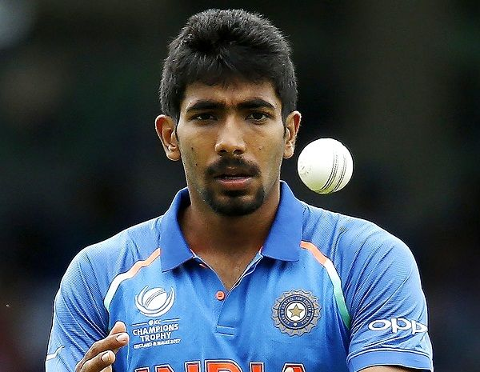

Jasprit Boomrah

Jasprit Boomrah was born on December 193.He is an Indian cricketer who plays for the Indian national cricket team.He was born in Ahmedabad,Gujrat,India.He is now aged 25.He is a bowler.His bowling style is Right-arm fast-medium. His national country is India.His ODIshirt no. is 93.His T20I shirt no. is also 93.He consistently bowls at 140-145 kilometer per hours (87-90mph) making him one of the fastest bowlers in swinging yorker deliveries.He had made world record to take 4 wickets in 1 over He has taken 103 wickets total in ODI.